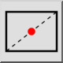
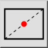
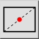
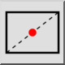

Middle Manual
Verktygsfält / ikon:
 

Meny: Snap > Middle Manual
Genväg: S, N
Kommandon: snapmiddlemanual | sn
Detta är en automatisk översättning.
Verktygsfält / ikon:
 

Meny: Snap > Middle Manual
Genväg: S, N
Kommandon: snapmiddlemanual | sn
Med det här verktyget kan du fästa en punkt som ligger mitt emellan två punkter. Detta används oftast för att fånga till mitten av en rektangel eller polygon genom att välja två diagonalt motsatta hörn.